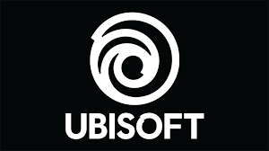
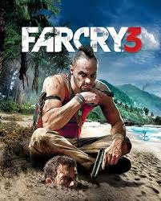
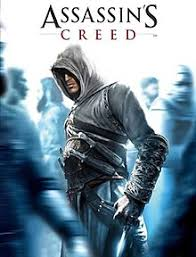
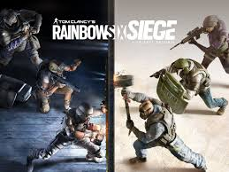

note: this is a personal opinion site. i am not affiliated with ubisoft. all of this is subjective. i do not own any imagery shown on this site.
We all know ubisoft, right? we all know theyre bad right? i believe they are one of, if not the worst company of all. worse than EA, activision, all of that.
in case you dont know, ubisoft is a french gaming company founded in 1986.
(also btw, if i get anything wrong please let me know at reddit. u/Samidyrn
why would i be making this site? here:
what? this section would be every controversy, EVERYTHING that ubisoft has done how? by virtue of being a big ass game company, most people ignore ubisoft's bullshit why? because ubisoft never cared about games, they cared about money. their contractors did (like the creator of rayman) but they didn't.
ubisoft has just re-used ideas many times. they keep milking the same ideas until its gotten all boring then they add stupid microtransactions to them.
take farcry for example: every since far cry 3, theyve been using the same and same formula enough to if you played one you've played all.
and they dont even do the formula good. most are shitty, unpolished rebrands of far cry 3. you can totally see this if you've played more then 1 far cry game.
same thing with Assassins creed, the first 3 were good but now its "the same game but set in another place! ooh!". fuck you, ubisoft. do better.
they really, really dont put effort into the games they make. and thats what i absolutely hate.
lets talk about r6 shouldnt we? ubisoft used to actually care about this game.
now its just filled with cheaters and even worse, ubisofts greed.
ubisoft has barely done anything about the games cheating problem. what have they done? include a monthly membership in the game! woo!
oh, and have we talked about microtransactions yet?
this game is infested with it. keep in mind this is a PAID game. microtransactions. thats some EA level of greed ill tell ya.
this games graphics were set to fail. and while im not the type of guy to care about graphics, i mean come on the game looked like a PS3 GAME FROM ONLY 2 WEEKS OF RELEASE.
now this is where i think makes ubisoft the worst, abandonment.
lets take rayman for an example. a classic platformer that everybody loves! its what made ubisoft famous to begin with.
last game? 2013. 11 years, no rayman game.
they have completley abandoned the game that made them who they are, and sure he comes every once in a while but 11 years without a game? come on.
not only that, before they abandoned rayman the games they made were actually GOOD! far cry 3 was actually good (probably why they re-use it), and rayman legends (the last rayman game) was a great game!
and right after legends, every game started to become GARBAGE and scummy. what happened? idk.
another example? ghost recon. not getting into it much but, yeah its pretty much abandoned.
on march 31, 2024 ubisoft shut down the game servers "the crew" and what happened? gone. everyone who bought the game, werent able to play the game that THEY paid for.
no refunds either, everyone who paid for the game did NOT have the game.
how is this not illegal? its cause if you buy a game from a digital store, you dont "own" the game. you own a LICENSE to play it. thus, allowing ubisoft to take it away from you.
this is just stealing, and is just proof the levels ubisoft will do just to fuck you over whenever they can. fuck this outlandish company.
in 2021, 5 employees at ubisoft were arrested of claims of sexual harassment. i wont say much as this is a serious topic. so ill just link the article.
also apparently, ubisoft barely did anything about this. only firing the workers.
i wont say alot as this might be a bit too serious but do with this as you can.
conclusion? fuck ubisoft. from generic greed, re-used formula and stealing to sexual harassment.
i would suggest to pirate ubisoft games cuz fuck them man. they dont deserve money and should just rot.
just, fuck ubisoft. i have a burning hatred for them.